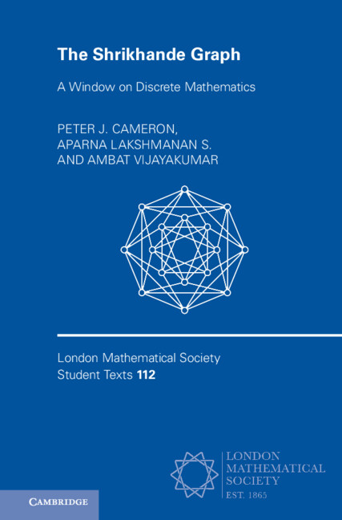

The Shrikhande graph
A Window on Discrete Mathematics
This book is currently in press in the London Mathematical Society Lecture Note
Series, from Cambridge University Press; ISBN
9781009709101 (hardback),
9781009709088 (paperback).
Here I will keep items related to the book or its subject, the celebrated
Shrikhande graph.

The authors
Recent results about the Shrikhande graph
- Mikhail Klin reminded me that the Shrikhande graph makes an appearance
in his paper "The strongly regular graph with parameters (100,22,0,6):
Hidden history and beyond", in Acta Universitatis Matthiae Belii,
series Mathematics Volume 25 (2017), 5–62, ISSN 1338-712X, ISBN
978-80-557-1357-1, available here.
This is a long tutorial paper on the graph of the title, commonly referred to as the
Higman–Sims graph although it was first discovered by Dale Mesner,
a student of R. C. Bose (and so mathematical brother to Shrikhande).
(Mesner never examined the automorphism group of his graph; Higman and Sims
were able to show that it contains as a subgroup of index 2 a then-new
sporadic simple group which bears their names.) The Shrikhande graph is
treated in detail in Example 4 in Section 2 of the paper; indeed, their
construction of it, shown in Figure 4, is visibly the same as the construction
using Seidel switching shown in Figure 10.1 on page 127 of the book.
-
The design spectrum of a simple graph G is the set of
positive integers n for which the edge set of the complete graph on
n vertices can be decomposed into copies of G. Tony Forbes and
Carrie Rutherford have shown that the design spectrum of the Shrikhande graph
consists of all integers congruent to 1 (mod 96). This paper is in the
Australasian Journal of Combinatorics 94 (2026), 195-200: the
link is here.
- Alexander Ivanov has written an interesting account of the Shrikhande
graph inside the Higman–Sims (or Mesner) graph on 100 vertices.
- Peter Cameron has shown that there is a triality associated with
the Shrikhande graph: take three pairwise dijoint copies of the graph, then it
is possible to put between any two the bipartite Dyck graph in such a way that
the resulting graph has automorphism group permuting the three copies as the
symmetric group, and inducing the full automorphism group of the Shrikhande
graph on each copy.
Pictures
- Vijay with the Shrikhande graph
- Aparna about to perform traditional Kerala dance
{kind=link}
{kind=link}